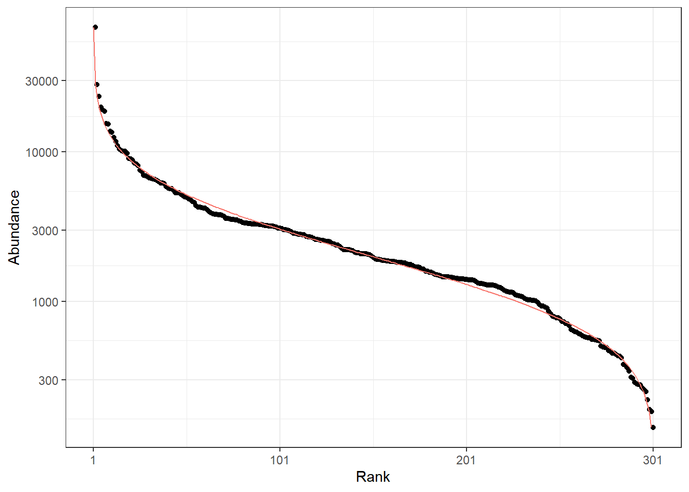
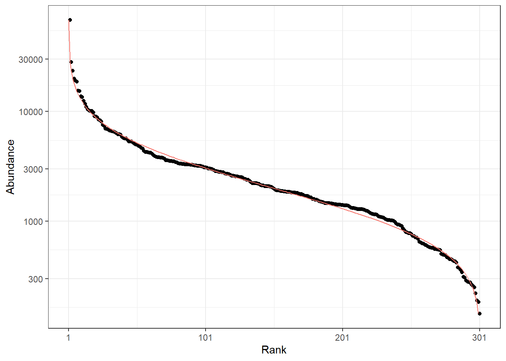
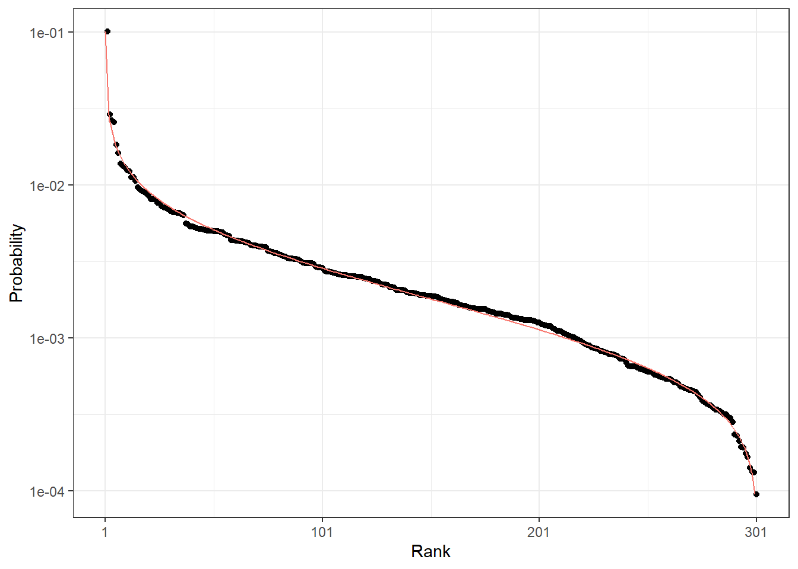
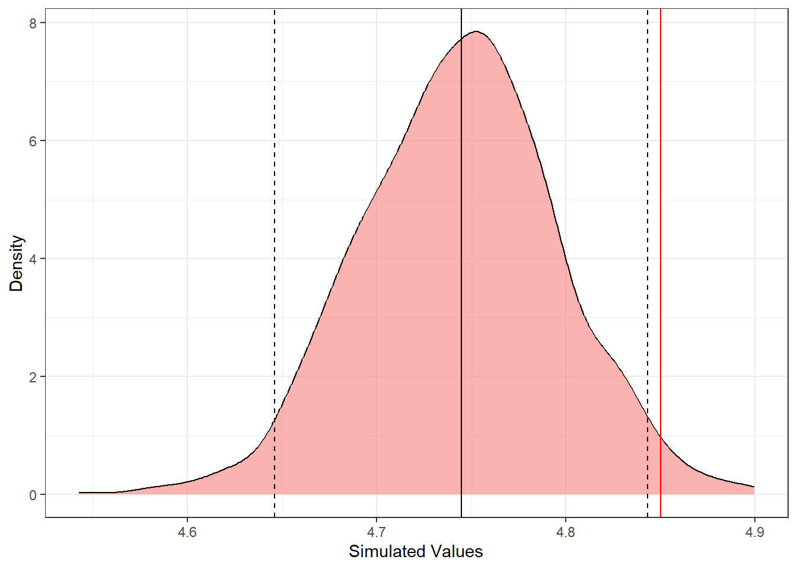
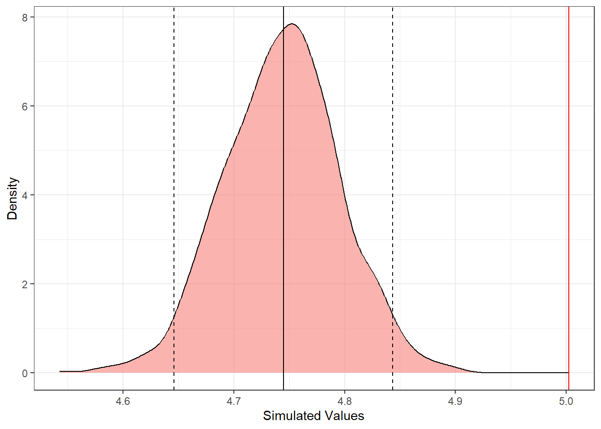

library("entropart")
distr_obs <- rCommunity(1, size = 1E6, Distribution = "lnorm")
autoplot(distr_obs, Distribution = "lnorm")
Est-ce qu’une communauté observée peut être considérée comme un tirage vraisemblable d’une distribution théorique ?
Un test pour rejeter cette hypothèse nulle est nécessaire.
Tirage d’une communauté de référence d’un million d’arbres, log-normale, 300 espèces.
library("entropart")
distr_obs <- rCommunity(1, size = 1E6, Distribution = "lnorm")
autoplot(distr_obs, Distribution = "lnorm")
Tirage d’une parcelle de référence, d’un hectare (600 arbres) :
plot_size <- 600
distr_plot <- as.AbdVector(rmultinom(1, size = plot_size, prob = distr_obs))
autoplot(distr_plot, Distribution = "lnorm")
Le modèle prévoit une distribution de probabilités, qui est simulée ici comme une version bruitée de la distribution de référence :
distr_model <- as.ProbaVector(
distr_obs * runif(length(distr_obs), min = 1/2, max = 2)
)
autoplot(distr_model, Distribution = "lnorm")
Choix de la diversité :
# Shannon
q <- 1L’entropie prévue par le modèle est calculée avec l’estimateur plugin parce que toutes les probabilités sont connues
(ent_model <- Tsallis(distr_model, q = q)) None
5.002325 Elle ne peut pas être comparée directement à celle observée dans la parcelle parce que la parcelle ne contient que 600 arbres.
(ent_plot <- Tsallis(distr_plot, q = q, Correction = "None")) None
4.849933 On pourrait comparer à l’entropie asymptotique estimée de la parcelle, mais le calcul d’une distribution serait compliqué :
Tsallis(distr_plot, q = q) UnveilJ
5.111925 Il faut donc tirer des communautés de 600 arbres à partir de la distribution de probabilités du modèle et comparer l’entropie observée dans la parcelle à la distribution de leur entropie.
Tirages de communautés prévues par le modèle, de la taille de la parcelle :
nSimumlations <- 1000
distr_sim <- rmultinom(nSimumlations, size = plot_size, prob = distr_model)La distribution de l’entropie prévue par le modèle est comparée à l’entropie de la parcelle :
ent_model_sim <- apply(distr_sim, MARGIN = 2, FUN = Tsallis, q = q, Correction = "None")
sim_test <- as.SimTest(ent_plot, ent_model_sim)
summary(sim_test)Real value: 4.849933
Quantile in the simulated distribution: 0.98
Quantiles of simulations:
2.50% : 4.646112
97.50% : 4.843211
Mean simulated value: 4.743453 autoplot(sim_test) +
ggplot2::geom_vline(xintercept = median(ent_model_sim))
Ici, la valeur réelle (en rouge) est proche de la médiane des entropies prévues (en noir).
On peut calculer une p-value, qui est la proba que la valeur réelle ne soit pas prédite par le modèle :
sim_quantile <- ecdf(ent_model_sim)(ent_plot)
# p-value
1 - 2 * abs(sim_quantile - 0.5)[1] 0.04On peut aussi calculer une erreur de prédiction mais elle donne l’illusion d’une grande précision :
(RMSE <- sqrt(
(ent_plot - mean(ent_model_sim))^2 +
var(ent_model_sim)
) / ent_plot
) None
0.02441104 La différence d’entropie entre la distribution du modèle et ses tirages de 600 arbres est l’entropie \(\beta\) (de Kullback-Leibler).
ent_model_sim <- apply(distr_sim, MARGIN = 2, FUN = Tsallis, q = q, Correction = "None")
sim_test <- as.SimTest(ent_model, ent_model_sim)
summary(sim_test)Real value: 5.002325
Quantile in the simulated distribution: 1
Quantiles of simulations:
2.50% : 4.646112
97.50% : 4.843211
Mean simulated value: 4.743453 autoplot(sim_test) +
ggplot2::geom_vline(xintercept = median(ent_model_sim))